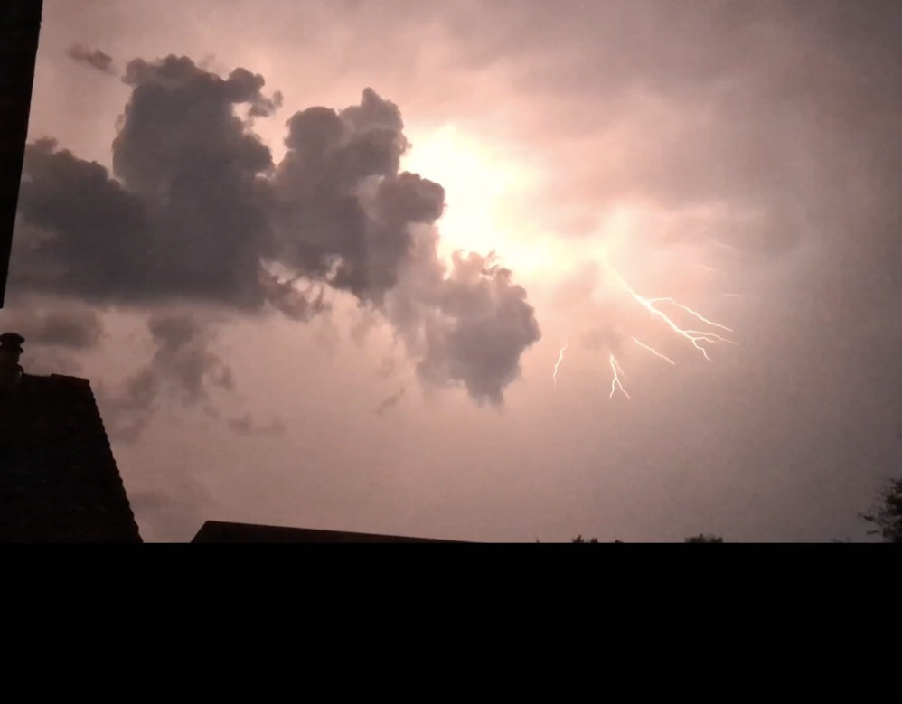

Weerfoto van de week
Hieronder zie je de actuele weerfoto uit de omgeving van het Persoonlijk Weerstation Morgenzoneinde.

Week 28 "Korenburgerveenweg"
Actuele live metingen uit Winterswijk (Morgenzoneinde)
Hieronder zie je de actuele weerfoto uit de omgeving van het Persoonlijk Weerstation Morgenzoneinde.
Week 28 "Korenburgerveenweg"

Week 27
"Mooie ontladingen aan de Morgenzoneinde"